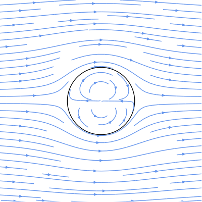
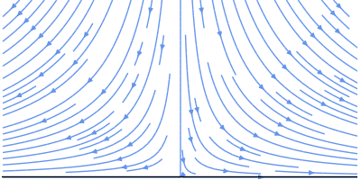
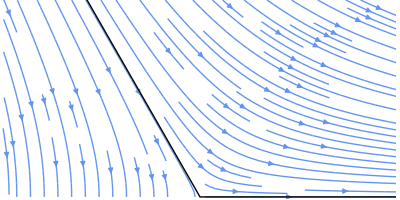
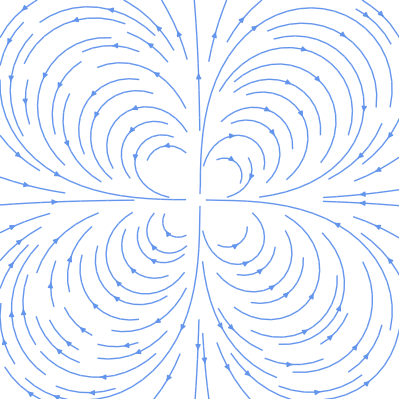

Articles
This blog is mostly dedicated to producing "pretty" scientific plots using Matplotlib and was partly inspired by Gnuplotting. There are plenty of example plots in the Matplotlib gallery, but this blog will (probably) be more focused on tweaking the aesthetics of plots.
Every once and awhile, I may stray into other topics, such as design, presentations, scientific publications, LaTeX, fluid mechanics, or education. It's a blog: you shouldn't expect much focus.
Article ArchivesPlotting streamlines with Matplotlib and SymPy
April 21, 2012tags: fluids, matplotlib, sympy
Fluid mechanics lends itself to some beautiful visualizations and images. I won't cover anything too complicated here, just potential flow, which any undergrad who has taken a fluid mechanics course should be (at least somewhat) familiar with.
I won't really cover the math or theory here; I'm just going to plot some pretty pictures. Let's just assume you already have some stream functions close at hand. For example, here's the stream function, $\psi$, for the flow around a cylinder:
Here, $U$ is the (horizontal) flow velocity, $R$ is the radius of the cylinder, and $r$ and $\theta$ are polar coordinates. Let's rewrite this equation as a python function that returns a sympy function (since we're going to want some derivatives later):
import sympy
from sympy.abc import x, y
def cylinder_stream_function(U=1, R=1):
r = sympy.sqrt(x**2 + y**2)
theta = sympy.atan2(y, x)
return U * (r - R**2 / r) * sympy.sin(theta)
This function returns a sympy function object that takes variables $x$ and $y$ (instead of $r$ and $\theta$), which are convenient for plotting later. (If you're not familiar with sympy functions, check out some tutorials.)
The stream function is a bit abstract, so let's convert it to horizontal and vertical velocities, $u$ and $v$. These velocities can be written as derivatives of the stream function:
And since cylinder_stream_function returns sympy functions, we can use their diff methods to take derivatives, and then convert the resulting sympy functions into numpy functions using lambdify (huh?):
def velocity_field(psi):
u = sympy.lambdify((x, y), psi.diff(y), 'numpy')
v = sympy.lambdify((x, y), -psi.diff(x), 'numpy')
return u, v
Now, we have functions u(x, y) and v(x, y), which can accept numpy arrays. Before showing some pretty plots, let's create a couple of convenience functions. First, here's a simple function that creates a grid of points, X and Y, and plots streamlines using matplotlib's brand-spanking-new streamplot function (as of this writing, you'll need a recent github version of matplotlib):
import numpy as np
def plot_streamlines(ax, u, v, xlim=(-1, 1), ylim=(-1, 1)):
x0, x1 = xlim
y0, y1 = ylim
Y, X = np.ogrid[y0:y1:100j, x0:x1:100j]
ax.streamplot(X, Y, u(X, Y), v(X, Y), color='cornflowerblue')
which accepts a matplotlib axes and our velocity components, $u$ and $v$. Here, np.ogrid just creates a 100-by-100 grid of points between the specified $x$ and $y$ limits. Note that the indices to np.ogrid look like start:stop:step, but the "step" here is imaginary. Using imaginary numbers tells numpy to interpret the last value as the "number of points between start and stop" instead of "step interval" (kind of like switching from np.arange to np.linspace).
Next, to prettify our plots a bit, let's create a function that removes extra white-space, ticks, and spines (the lines surrounding the axes):
def format_axes(ax):
ax.set_aspect('equal')
ax.figure.subplots_adjust(bottom=0, top=1, left=0, right=1)
ax.xaxis.set_ticks([])
ax.yaxis.set_ticks([])
for spine in ax.spines.itervalues():
spine.set_visible(False)
Now with that out of the way, let's plot the flow around a cylinder:
import matplotlib.pyplot as plt
psi = cylinder_stream_function()
u, v = velocity_field(psi)
xlim = ylim = (-3, 3)
fig, ax = plt.subplots(figsize=(4, 4))
plot_streamlines(ax, u, v, xlim, ylim)
c = plt.Circle((0, 0), radius=1, facecolor='none')
ax.add_patch(c)
format_axes(ax)
Stepping through block-by-block: we first create the stream function (using the default velocity and cylinder radius) and create velocity functions $u$ and $v$. Next, we tweak the default sizes (of both the data-limits and the figure) and call our convenience function, plot_streamlines. For better visualization, we also plot a circle, which represents the cylinder. Finally, we call our convenience function format_axes to clean up the plot. And here's the result:
That's all there is to it. If you have your equations written in terms of potential functions instead of stream functions, then you can just switch out the derivatives in the plot_streamlines function and you're good to go.
Since we spent so much time writing a framework for plotting stream functions, we might as well play around with it a bit more. Luckily, there's a stream function that describes flow around a range of geometries (e.g., corners and walls):
where $A$ is a constant that determines the scale and rotation, and $n$ is a constant that determines the geometry. You should be able to write the python function yourself based on the cylinder example above, but just for posterity:
def corner_stream_function(n=1, A=1):
r = sympy.sqrt(x**2 + y**2)
theta = sympy.atan2(y, x)
return A * r**n * sympy.sin(n * theta)
Now, let's start simple with a vertical flow impinging on a horizontal wall (n = 2), or, equivalently, flow around a 90-degree corner:
Here's flow around a 125-degree corner (n = 3/2):
Finally, when n is negative, we can simulate singularities. Here's a quadrupole (n = -2):
Beautiful, don't you think?
Page 1 / 1